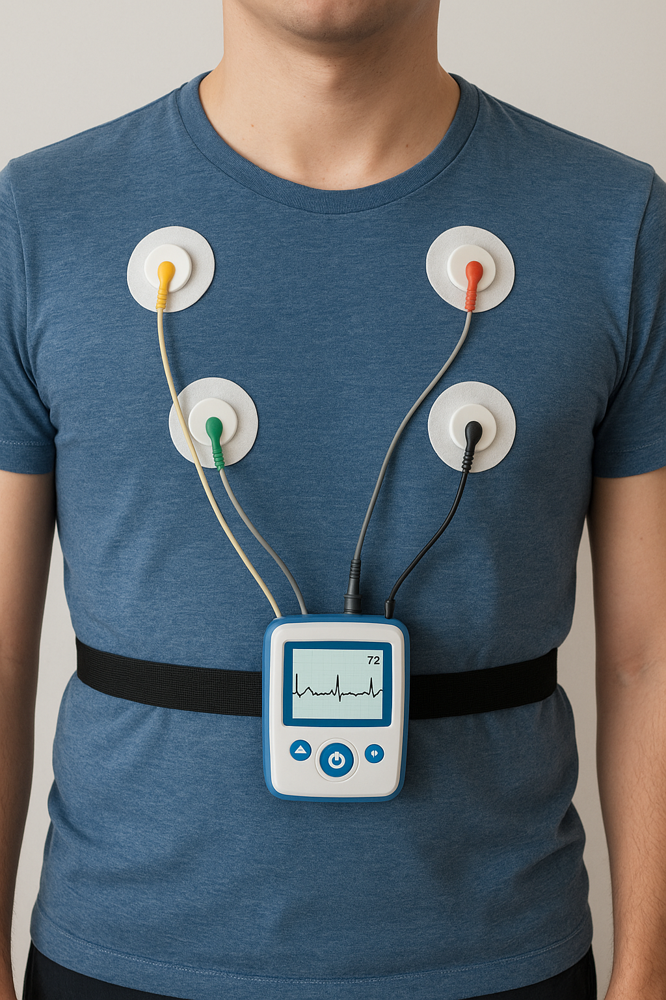

Cardiology Consultations
Our team of cardiologists provide expert assessment and personalized care for all heart-related concerns. Whether you are experiencing chest discomfort, palpitations, shortness of breath, or simply wish to assess your cardiovascular health, our team uses advanced diagnostic tools and evidence-based practices to guide your treatment. We focus on early detection, prevention, and management of heart conditions to help you maintain a healthy, active life.

Echocardiogram
A non-invasive ultrasound test that uses sound waves to create images of the heart, allowing doctors to assess its structure and function. This comprehensive diagnostic tool helps us evaluate heart chambers, valves, and overall cardiac performance.
ECG (Electrocardiogram)
A test that records the electrical activity of the heart, helping doctors diagnose and monitor heart conditions. This quick and painless procedure provides valuable information about heart rhythm, size, and function.
Stress Echocardiogram
A test that uses ultrasound imaging to show how well your heart muscle is working to pump blood to your body while you exercise in a controlled setting. This diagnostic procedure helps identify coronary artery disease and assess cardiac function under stress.

Holter Monitor
This test involves wearing a small, portable device that continuously records your heart's electrical activity for 24 to 48 hours (or longer) to detect and analyze any irregularities or arrhythmias. The extended monitoring period allows us to capture heart rhythm abnormalities that may not appear during a standard ECG.